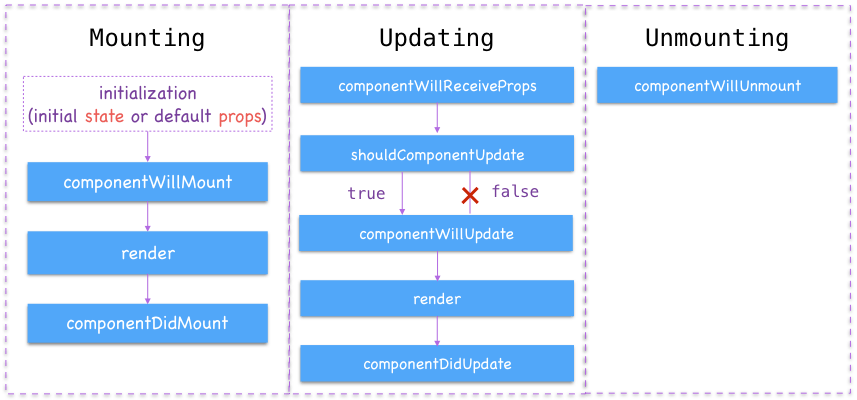

Lifecycle
組件的生命週期
- Old LifeCycle

- React 16.4 LifeCycle

React LifeCycle Diagram: http://projects.wojtekmaj.pl/react-lifecycle-methods-diagram/
render
- 每個 React Component 都必需定義的方法，負責繪製 UI 的結構（Virtual DOM 節點結構）
必須 return 僅一個 React Element，所以 Component 結構第一層才只能有一個節點
每次 Component 成功重繪的生命週期中都會被呼叫到並執行
componentDidMount
- 在 Component 初始化並且首次繪製完成實際 UI 後觸發，重繪時不會觸發
- 在 Component 的實際 UI 從畫面中移除之前，只會發生一次
- 通常一些首次進入畫面後想發生的事情就適合在這裡呼叫，例如發送 HTTP Request 向後端 API 請求資料
class Example extends React.Component {
componentDidMount() {
// ...
}
}
練習： DidMount Sample: https://snack.expo.io/@dmoon/didmount-sample
componentDidUpdate
不能在沒有條件下進行 setState，否則會無窮迴圈 一般會透過新舊比較 ( prevProps 與 this.props ) 或是 ( this.props 與 nextProps )，state 比較異同，再更新 state
class Example extends React.Component {
componentDidUpdate(prevProps) {
// Typical usage (don't forget to compare props):
if (this.props.userID !== prevProps.userID) {
this.fetchData(this.props.userID);
}
}
}
getDerivedStateFromProps(nextProps, prevState)
getDerivedStateFromProps 主要是對比到原先的 componentWillReceiveProps，可以透過回傳一個 object 來更新 state，如果不更新就必須回傳 null。
getDerivedStateFromProps 帶有兩個參數 nextProps, prevState，更新後的 props，先前的 state，這個 method 在初始 render 調用，還有父元件重新 render 時也會調用。
class Example extends React.Component {
static getDerivedStateFromProps(props, state) {
// ...
}
}
getSnapshotBeforeUpdate
getSnapshotBeforeUpdate 方法可以回傳值，回傳的值能夠在 componentDidUpdate 方法的參數收到。
class Example extends React.Component {
getSnapshotBeforeUpdate(prevProps, prevState) {
// ...
}
}
範例
class ScrollingList extends React.Component {
listRef = React.createRef();
getSnapshotBeforeUpdate(prevProps, prevState) {
// Are we adding new items to the list?
// Capture the current height of the list so we can adjust scroll later.
if (prevProps.list.length < this.props.list.length) {
return this.listRef.current.scrollHeight;
}
return null;
}
componentDidUpdate(prevProps, prevState, snapshot) {
// If we have a snapshot value, we've just added new items.
// Adjust scroll so these new items don't push the old ones out of view.
if (snapshot !== null) {
this.listRef.current.scrollTop +=
this.listRef.current.scrollHeight - snapshot;
}
}
render() {
return (
<div ref={this.listRef}>{/* ...contents... */}</div>
);
}
}
React v16.9.0 更新
React v16.9.0 後將容易誤用的生命週期方法進行更名，舊的方法依然可以使用，但會出現 warning
- componentWillMount → UNSAFE_componentWillMount
- componentWillReceiveProps → UNSAFE_componentWillReceiveProps
- componentWillUpdate → UNSAFE_componentWillUpdate
若想知道 React 16.3 之後的生命週期更新，可以參考 Migrate 文件：https://reactjs.org/blog/2018/03/27/update-on-async-rendering.html#migrating-from-legacy-lifecycles，
若想對專案舊有的生命週期進行更名，可以用這個指令
cd your_project
npx react-codemod rename-unsafe-lifecycles